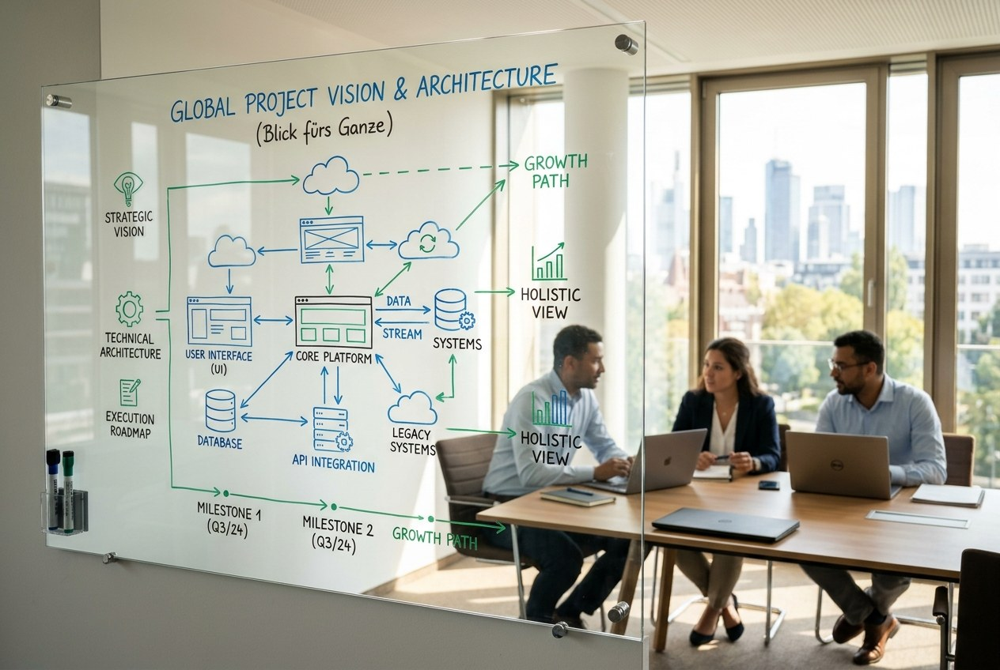

Projekterfahrung & Blick fürs Ganze
Viele Ideen und widersprüchliche Anforderungen bringe ich strukturiert zusammen und forme daraus ein klares, stimmiges Gesamtergebnis.
Hinter Young Web Solutions steht ein offiziell angemeldetes Gewerbe und langjährige Erfahrung in der professionellen Softwareentwicklung. Als promovierter Ingenieur aus Baden-Württemberg verbinde ich fundierte technische Präzision mit modernem Web- und IT-Design.
Direkt & unkompliziert: Bei mir gibt es keinen Agentur-Wasserkopf und kein Fachchinesisch. Sie haben mich als direkten Ansprechpartner. Durch den gezielten Einsatz moderner, KI-unterstützter Entwicklungsmethoden realisiere ich Ihre Website besonders zügig, auf höchstem Qualitätsstandard und zu fairen und transparenten Festpreisen für Basispakete und ggf. Zusatzleistungen.
Ob ansprechende Benutzeroberflächen, strukturierte Layouts oder zukunftssicherer Code: Mit technischer Präzision und Liebe zum Detail begleite ich Ihr Projekt, bis alles perfekt sitzt.

Im Ländle geboren und Familienvater – persönlich, bodenständig und der Region verbunden.
Sie sprechen direkt mit mir: strukturiert, verlässlich und ohne Umwege.

Viele Ideen und widersprüchliche Anforderungen bringe ich strukturiert zusammen und forme daraus ein klares, stimmiges Gesamtergebnis.
Ob Benutzeroberflächen, Grafiken oder Webseiten: Mit ausgeprägtem Sinn für Gestaltung und einem gesunden Perfektionismus sorge ich für ein sauberes Erscheinungsbild.
Durch neue, KI-unterstützte Workflows setze ich Ihr Design zeiteffizient und auf aktuellem Stand der Technik um.